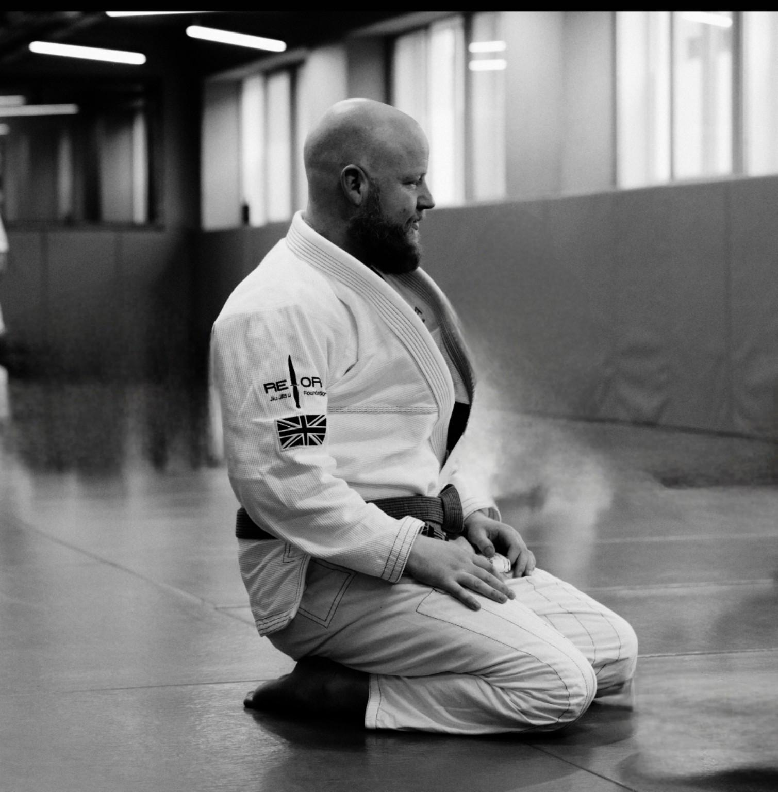

Who am I?
Stephen
Park
I’m a lifelong martial artist, a husband, a dad of two and an RAF veteran with 12 years of service. I earned my first-dan black belt in taekwondo in 1995, and I’m still a student of anything related to MMA.
I’ve trained in Brazilian Jiu-Jitsu since 2015, earned my brown belt through the Roger Gracie Jiu Jitsu Association, competed internationally and coached since 2019. I broke my neck at the 2020 IBJJF European Championships, won the match, and learned a lot about training around injury.
I no longer train to compete. I train to get older well, and that shapes how I coach everyone from everyday clients to athletes.

Qualifications and study
- Active IQ Level 3 Diploma in Gym Instructing and Personal Training
- Active IQ Level 3 Diploma in Sports Massage Therapy
I’m currently in my third year of a BA (Hons) in Business and Management.